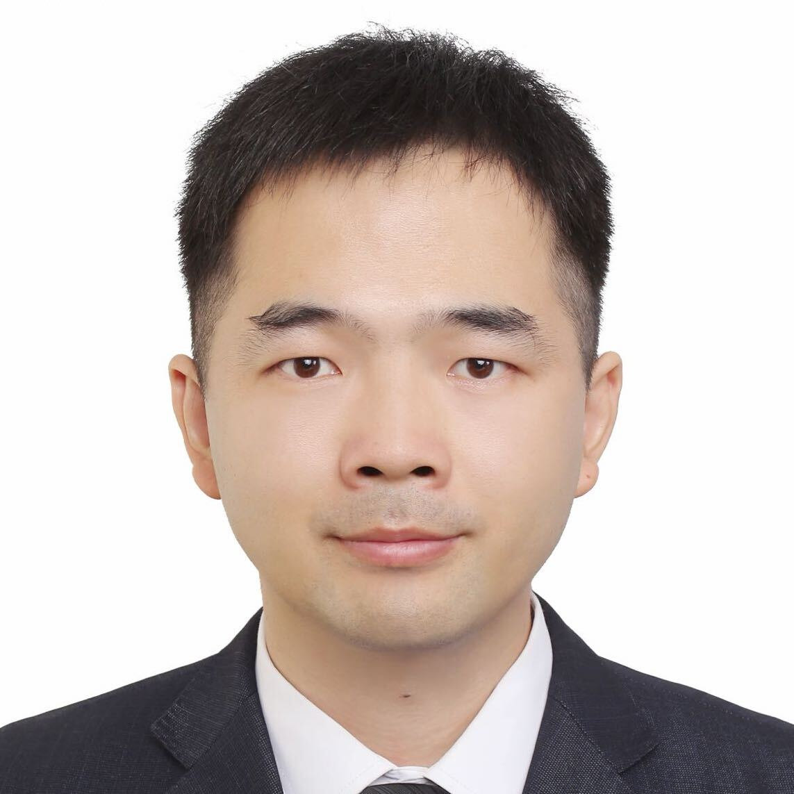

广东省杰青、深圳市优青、IEEE Senior Member、斯坦福大学评选的全球前2%顶尖科学家。以第一/通讯作者发表中科院1区Top SCI期刊+CCF A类顶会论文50余篇 （如TPAMI/IJCV、CVPR/ICML等）。主持国家重点研发计划课题、广东省杰出青年基金、深圳市优秀青年基金、国家自然科学基金面上项目、国家自然科学基金青年项目。 获省部级科技奖励2项，其中以第二完成人获2024年度广东省自然科学一等奖。 指导学生获 ACM Multimedia 国际挑战赛冠军、 ICME 国际挑战赛双料冠军、 CVPR 国际挑战赛季军、 ACM MM Asia 最佳论文候选等奖励10余项。 担任SCI期刊IEEE Transactions on Image Processing编委、 Pattern Recognition编委、 Journal of Visual Communication and Image Representation编委、 CAAI Transactions on Intelligence Technology青年编委、 Science Partner Journal Cyborg and Bionic Systems青年编委； 国际会议IROS、ICME、VCIP、PRCV等研讨会主席及领域主席； 中国人工智能学会智能机器人专业委员会副秘书长、 中国人工智能学会青年工作委员会副秘书长、 中国图象图形学学会青年工作委员会委员。
2023‒至今， 研究员，北京大学深圳研究生院
2020‒2023， 长聘副教授，中山大学
2018‒2020， 高级研究员，腾讯AI Lab
2017‒2018， 博士后，新加坡南洋理工大学EEE学院 （ 导师：Junsong Yuan, IEEE/IAPR Fellow； Kai-Kuang Ma，新加坡工程院院士，IEEE Fellow ）
2012‒2017， 博士，北京大学信息科学技术学院 （ 导师：刘宏教授，国家级领军人才 ）
2008‒2012， 学士，南开大学机器人与信息自动化研究所 （ 导师：方勇纯教授，国家级人才； 赵新教授，国家级人才 ）